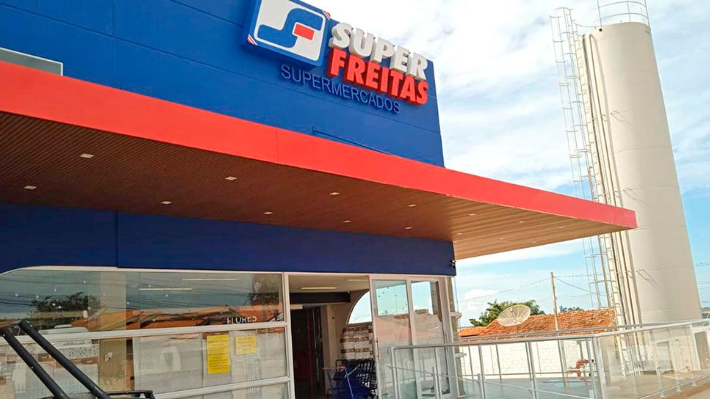
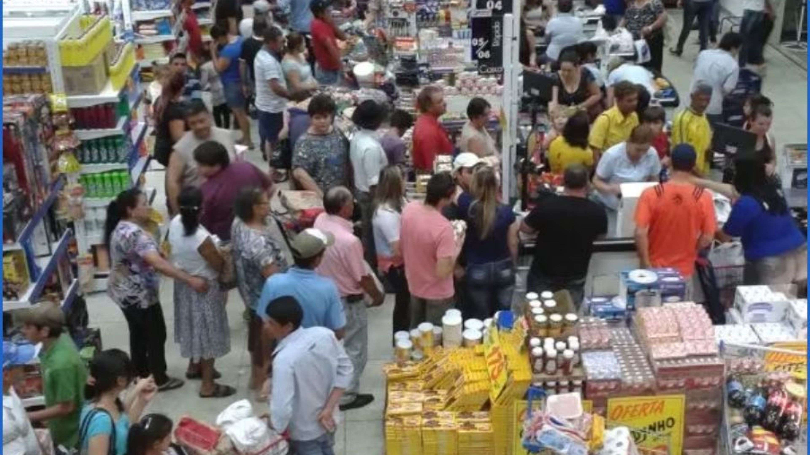
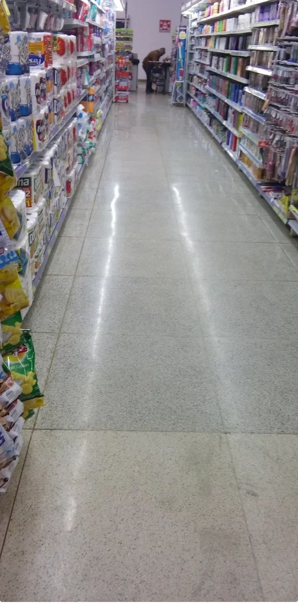

Filas no pico
Gargalos nos caixas geram espera excessiva e frustração nos horários de maior fluxo.
inovação no varejo local
O Super Freitas Mais Ágil transforma pequenos gargalos da rotina em uma experiência de compra mais rápida, prática e fiel para toda a comunidade.

etapa 1 · diagnóstico

Rotina de alto fluxoGargalos nos caixas geram espera excessiva e frustração nos horários de maior fluxo.
Encontrar produtos, conferir preços e saber quais promoções estão ativas toma mais tempo do cliente.
Itens de alta procura podem se esgotar antes que a equipe identifique a demanda.
etapa 2 · proposta de valor
Apoio simples à compra, desde a consulta de preço até o aviso imediato de fila e a solicitação de reposição.
01
Pontos estratégicos para consultar produtos e localização sem depender de funcionários.
02
Compras pequenas com fluxo dedicado para descongestionar os horários de maior circulação.
03
Reposição e reorientação de fluxo antes que o cliente precise reclamar.
operação prática
Uma sequência curta, pensada para facilitar a jornada de quem compra e de quem atende.
consulta no corredor
O cliente escaneia o QR Code ou usa o totem para ver preço atualizado, promoção ativa e o corredor do produto.
registro do aviso
Se houver uma gôndola vazia ou fila anormal, a demanda pode ser registrada pelo celular ou pelo ponto de consulta.
ação da equipe
A equipe recebe o aviso para repor itens, reforçar o caixa ou orientar o cliente com mais agilidade.

impacto e benefícios
plano de execução
Um cronograma modular e de baixo impacto operacional, planejado para teste imediato.
Mapear filas críticas, produtos de maior giro e dúvidas recorrentes.
Configurar QR Codes, placas nos corredores e alinhar a equipe.
Testar no horário de pico e medir a velocidade de resposta.
Ajustar com base nos alertas e expandir para os corredores.
conclusão do pitch
Pequenas melhorias no ponto de venda podem tornar a compra mais rápida, prática e próxima da comunidade.